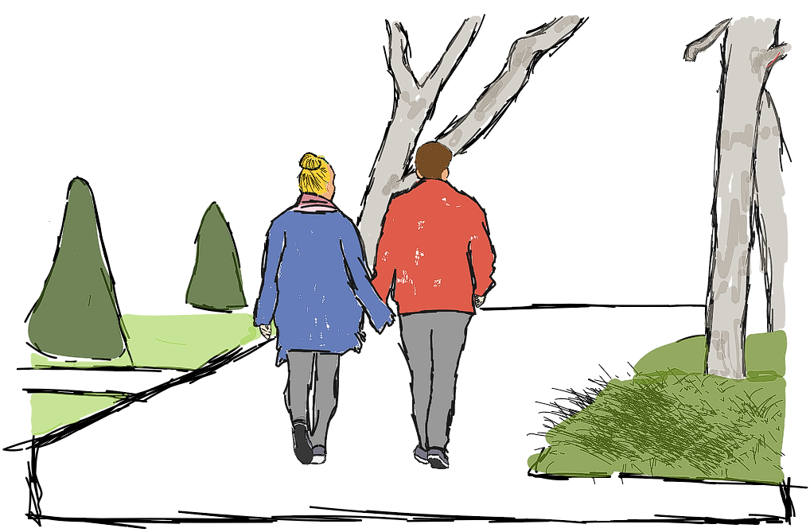

Ønsker du at gøre en positiv forskel og støtte pårørende til psykisk syge?
Din tid og engagement kan gøre en verden til forskel for dem, der har brug for støtte. Vi tilbyder et bredt udvalg af aktiviteter, og uanset om du vil bidrage til sociale arrangementer, aktive udflugter eller oplysende workshops, har vi brug for netop dig og dine kompetencer! Udover det frivillige arbejde, har du også mulighed for at deltage i vores sociale og faglige aktiviteter kun for frivillige. Det kan blandt andet være fællesspisning, koncerter, foredrag, julefrokost eller andet hyggeligt.
Hvad kan du lave som frivillig?

Pårørende Café
kort oneliner
Læs mere